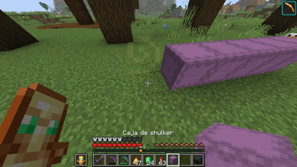

Introduccion
Presentación
Hola mi nombre es Héctor, tengo 19 años y actualmente soy estudiante y residente en ITSON, campus Sonora Cd.Obregon Nainari, busco aprender todo lo posible con el proposito de algún dia ejercer con los conocimiento de mi carrera y no ser pobre y vivir en la calle, diría que ese es mi principal propósito aparte de especificar que no creo que el Frontend sea lo mio
Datos Personales
- Edad: 19
- Ciudad: Los Mochis
- Carrera: ISW
- Correo: jesus.flores262713@potros.itson.edu.mx
Habilidades
- Programación orientada a objetos: Fundamentos sólidos aplicados en Java
- SQL y no SQL: Diseño de esquemas y consultas
- Diseño de software: Análisis de requerimientos y arquitectura de aplicaciones
Objetivos
- Corto plazo: Dominar las bases de HTML, CSS y JavaScript para hacer páginas web dinámicas, interactivas y adaptables a dispositivos móviles
- Mediano plazo: Graduarme de la universidad para integrarme en algún equipo de desarrollo donde pueda seguir aprendiendo sobre todo ganar dinero
- Largo plazo: ser rico y vivir a gusto
- En esta clase: pasarla

Historial Academico
| Semestre | promedio |
| 1 | 9.57 |
|---|---|
| 2 | 8.71 |
| 3 | 9.16 |
| 4 | 8.85 |
Hobbies
Mis hobbies principales son escuchar música, dormir y, sobre todo, los videojuegos; los juego desde que tengo memoria. Mis favoritos desde niño han sido los FPS (First Person Shooter), aunque juego casi todos los géneros. Diría que mi mayor logro en estos es que estuve en el Top 500 de supports de América en Overwatch.